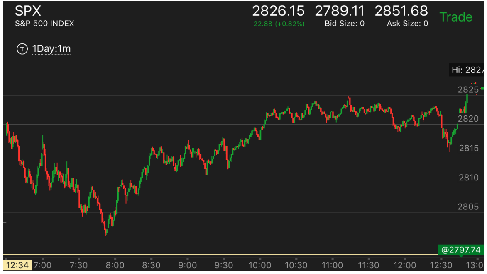
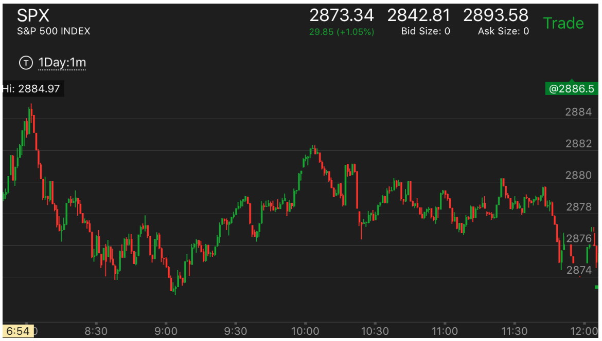

创新高后，快速拉回，然后出现了下跌两段走势，这样还会继续上涨
- 在新高点立刻拉回，然后持续的下跌，出现了下跌见底的走势，这样表示未来还会继续上涨。超过高点。
- 下跌也有类似的走势。关键在于高点停留时间很短，其实就是相对论走势的推论。
- 但是也并不是可以盲目去做。一定要分析，如果前面出现了两段走势或者走势的结束，而反向走势没有结束，
或者很慢，那么也不一定会回到原位。

图示：11:20从高点下跌，2分钟后，反弹再次下跌，出现了反常两段走势。
这个两段走势直到12：30才结束。而它在前面高点停留时间太短了。说明未来还会继续大涨。至少超过高点。
反向的例子，从高点快速拉回。但是没有回到原位。

图示：从高点快速拉回后，它的下跌出现了几个转折。这样，它的走势在9：00
反转后，只能反转到了超过2880这个点，而无法超过2884这个最高点。